Sometimes we have to deal with not typical situations like to handle with the ISO file, just not properly delivered as its content archived to a zip file - this is what I had to work with one time. Additional obstacle was the remote connection and nobody could help me on place. The archive contained the files for bootable recovery tools for one of the decryption software and the only way to do this was to use a virtual machine.
Delivered archive contained most important files in the root,
bootmgr and
bootmgr.efi files:
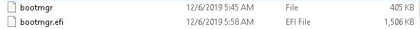
..and also
bootx64.efi under
\EFI\Boot:
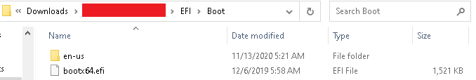
..and
“bootfix.bin” file under
\Boot\.
When investigating the topic later, actually I should use “etfsboot.com” from the same directory. It contains additional data besides MBR stored alone like it's in “bootfix.bin”. All the issues would not occur then, like not bootable ISO, what made me to go with option no. 2 with VHD mentioned below.
Generally speaking, there are several ways to create a bootable device depending on the situation, e.g.:
- Format USB stick if connected to recommended FAT32 and copy all the content from the unpacked directory (or just use Rufus and ISO if provided).
- Create VHD in Disk Management, format to FAT32 and copy all the content from unpacked directory (it's not going to work if there are files above 4GB due to FAT32 limitation!).
- Create ISO using free powerful software ImgBurn if data was not provided as bootable ISO and this is the option we are focusing on.
Creating bootable ISO using ImgBurn.
After launching the tool we choose “Create image file from files/folders”:
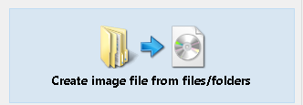
Then we click on the “Browse folder” icon and select our directory.
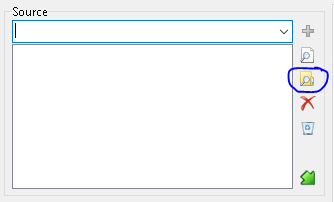
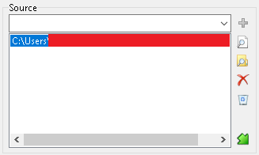
On the right side of the tool we choose “Advanced” tab and “Bootable Disc” lower tab. We need to select “Make Image Bootable”:
- “Emulation Type”- leave custom.
- “Boot Image”- browse the folders and in this case is
“bootfix.bin” file (
see red note above!) under
\Boot\:
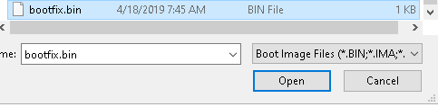
Please notice the file size is 1KB so it contains 2x sectors and we need to change default “4” to “2” in “Sectors to Load” option (sector is considered as 512 bytes).
“Platform ID:” 80x86.
“Developer ID” and “Load segment” we leave by default.
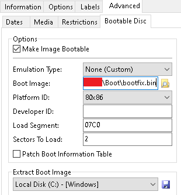
In addition we can consider some additional options under “Restrictions” lower tab:
..and also under “Labels” main tab and others.
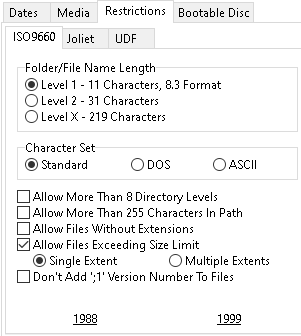
When all is set up we can choose our ISO destination and click ‘Build” button.
The tool can ask for some confirmations and after this we have successfully created bootable ISO.
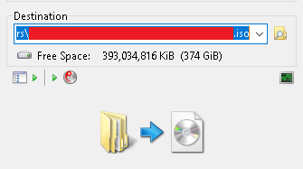
Using VMWare to decrypt.
- Prepare one of the bootable devices.
- Create new VMWare machine, recommended to declare Windows 10 to avoid EFI boot issues.
- When VM is created we choose “Edit virtual machine settings”.
- In “Hardware” tab we can see below “Add..” button, select “Hard disk” and “Use a physical disk” in second step, next choose proper “PhysicalDrive” as the decryption target (it can be checked under Disk Management to recognize correct number i.e. “PhysicalDrive2” is equal to “Disk 2” in DM.)
- After this depending on our choice we select:
- ISO under “CD/DVD (SATA)” hardware,
- We add our VHD same as encrypted device (as “Hard Disk”),
- We can attach our physical bootable USB stick.
- Please remember to set correct boot order or hit “Escape” when starting to boot VM to show boot menu.
- To make it easier you can go to VM directory “User\Documents\Virtual Machines\VMname” (by default) and open VMname.vmx file in notepad, then add to the new line anywhere:
firmware = “efi” and also bios.bootdelay = 5000 (what means 5 seconds).
Using VirtualBox to decrypt.
- Prepare one of the bootable devices.
- Create the VM without declaring new HDD and choose Windows 10.
- In VM settings, under “System” tab it is important to select “Enable EFI (special OSes only)”.
- In VirtualBox adding physical devices is a bit more complicated as we have to use CMD console:
- Start CMR and go to the installation folder of the VirtualBox (C:\Program Files\Oracle\VirtualBox by default).
- Type below command to create virtual VMDK that links to physical device:
VBoxManage internalcommands createrawvmdk -filename c:\Users\username\VirtualBox VMs\mydrive.vmdk -rawdisk \\.\PhysicalDrive0
(it can be checked under Disk Management to recognize correct number i.e.: “\ \.\PhysicalDrive0” is equal to “Disk 0” in DM).
After using this command under provided path we have mydrive.vmdk that links to physical drive 0.
- Then under VM settings and “Storage” tab we add our created VMDK files as “Controller: SATA” devices.
- In my case I used also VHD for decryption software like I did with VMWare, but it didn’t boot immediately, after booting the VM we see “UEFI Interactive Shell”:
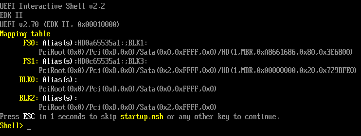
- Type: “FS0:” as it’s our VHD with bootable decryption software.
- Type: “cd \efi\boot” to move to \efi\boot dir.
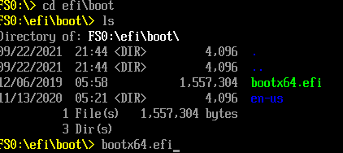
- As we can see under this directory is the boot file, please type “bootx64.efi” and press Enter to launch it.